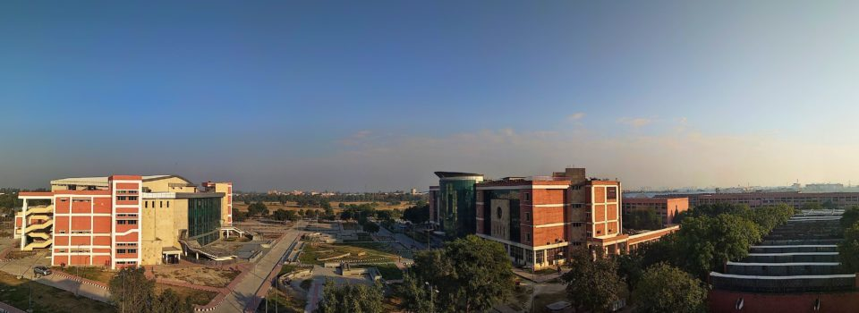

<div class="container" style="padding: 2% 10%">
  
  <div class="inner">
      <h1>ABOUT US</h1>

      <p>
          Deenbandhu Chhotu Ram University of Science & Technology, Murthal came into being on 6th 
          November 2006  by upgrading erstwhile Chhotu Ram State College of Engineering, Murthal 
          through an Act 29 of 2006 of the Legislature of the state of Haryana with the vision to 
          facilitate and promote studies and research in emerging areas of higher education with 
          focus on new frontiers of science, engineering, technology, architecture and management 
          studies, humanities, and also to achieve excellence in these and connected fields. The 
          University has been considered eligible for grants under Section 12(B) of UGC Act, 1956 
          in March, 2009. The University has got affiliating status and the technical and professional
           College/Institutes located in the District Sonepat have been affiliated to the University.
            Six B.Tech programmes of the University have also been accredited by National Board of 
            Accreditation (NBA). University has a Central Instrumentation Laboratory which is 
            available to scholars belong to different deptts or outside institute as central research 
            facility
      </p>

      <ul>
        <li>
          <h3>Location</h3>
          <br>
          <p>
            The University is located in NCR on National Highway No. 1 (G. T. Road) about 50 km 
            from ISBT, New Delhi towards Chandigarh and 8 km from Sonepat railway station. The 
            location of the University falls within one of the growing industrial belts of Haryana 
            extending from Kundli to Panipat.
          </p>
        </li>

        <li>
            <h3>Campus</h3>
            <br>
            <p>
                It is a residential university with a campus sprawling over 273 acres of land. 
                Architecturally the campus has been developed in four distinct zones – academic, 
                residences, hostels and recreational. The academic premises comprise of five 
                blocks including one administrative block. One iconic building i.e. Library 
                cum Computer Centre is also completed and is operational and a convention centre 
                is under construction.
            </p>
          </li>

          <li>
              <h3>Programs Offered</h3>
              <br>
              <p>
                  The University intends to impart high-end education through 26 Regular PG 
                  Courses and 9 Regular UG Courses in the academic session 2016-17. University 
                  is also running Ph. D. Programme in almost all the disciplines.  University 
                  also offers PG diploma in Forensic Biotechnology, Beginner’s and Certificate 
                  Courses in foreign languages such as French and German. Few UGC Career 
                  Oriented Programmes are also conducted to enhance the breadth of knowledge 
                  and skills of engineering students as well as other/outside candidates.
              </p>
            </li>

      </ul>
  </div>
</div>